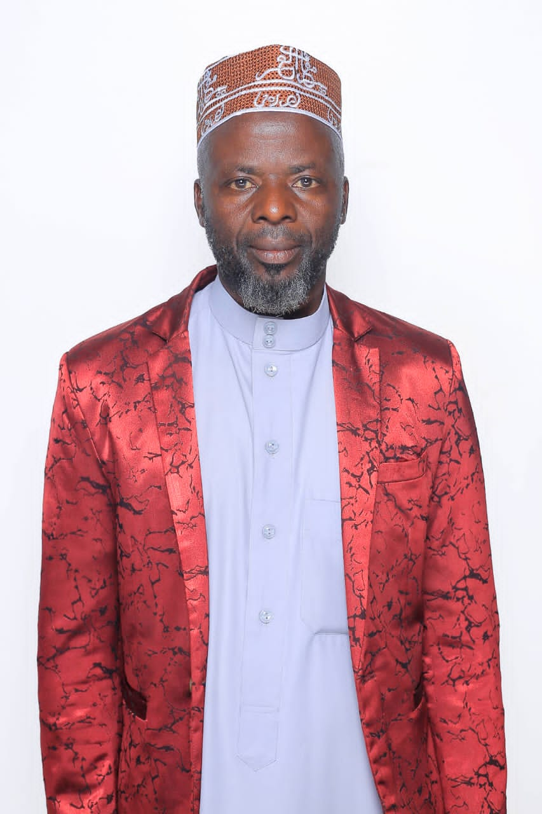

Community Action Network
Help Our Future Generation Thrive
Help Our Future Generation Thrive
Meet the dedicated leaders who guide Community Action Network's mission to empower communities through education, health, and economic initiatives. Our board brings diverse expertise and a shared commitment to creating lasting impact.

Chairman
Ibrahim earned a Diploma in Event Management. He then moved into the nonprofit sector as a Program Manager, advanced to Business Development Manager, and later took on a Nonprofit Leadership role. With over a decade of experience in nonprofit leadership, business management, and event planning, Ibrahim drives strategic initiatives for community development.

Vice Chairman
Mr. Yunus holds a Bachelor’s Degree in Education with over 20 years of experience in teaching. Using his leadership skills, Mr. Buwembo Yunus enhances organizational performance through expert leadership, strategic vision, and effective team coordination, skillfully managing projects, developing talent, and driving innovation across the organization.

Treasurer
Sarah holds a Bachelor’s Degree in Mass Communication and is a public health expert in integrative medicine. As the treasurer of our organization, she oversees financial strategy, ensuring effective resource allocation to support our mission. With a passion for advancing community wellness programs and advocacy, she significantly enhances our organization’s impact.

Secretary
Mukhusin holds a Bachelor’s Degree in Computer Science. He enhances organizational performance through expert coding, research, and technology management, effectively coordinating schedules, developing software, and driving innovation.

Chief Coordinator
Matovu JohnPaul is a Software Engineering professional who leads and oversees all coordinators at Community Action Network Limited. He drives effective programme coordination, organisational development and innovation through technical expertise and strategic leadership.

Publicity
Dr. Bashir holds a Diploma in Veterinary Medicine and Animal Husbandry. As a distinguished director of our organization, he leverages his expertise to facilitate robust communication and exemplary governance, ensuring cohesive alignment with our strategic objectives.
1. Sheik Abdul Aziz Bogele Over-all Co-ordinator
2. Sheik Mukasa Siragi Co-ordinator Kampala
3. Sheik Umar Kyeyune Co-ordinator Mbarara
4. Sheik Sulaiman Kasilye Co-ordinator Ibanda
5. Co-ordinator Isingiro